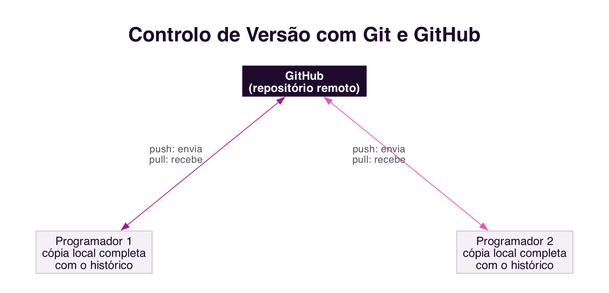
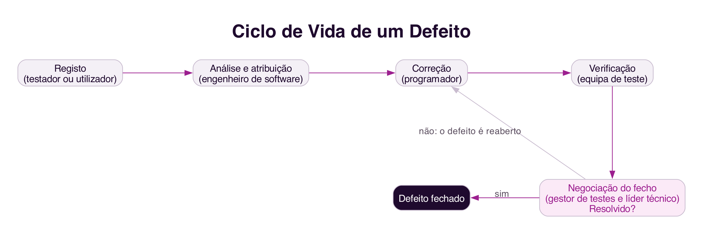

8 Desenvolvimento Colaborativo de Software
Desenvolvimento Colaborativo de Software
Introdução
Os capítulos anteriores discutiram a colaboração em espaços virtuais e na relação entre cidadãos e governo. Este capítulo volta-se para um domínio mais próximo de quem estuda Computação: o desenvolvimento de software é, ele próprio, uma atividade profundamente colaborativa, raramente realizada por uma só pessoa, e cada vez mais realizada por equipas geograficamente distribuídas.
8.1 Desenvolvimento de Software como Atividade Colaborativa
O sucesso de uma organização depende cada vez mais do software que usa como diferencial competitivo, e o desenvolvimento desse software é raramente uma atividade individual: diversos especialistas precisam de trabalhar em conjunto, coordenar as suas atividades, tomar decisões e comunicar continuamente para desenvolver software de qualidade dentro do prazo e do custo estimados (Souza, Marczak, e Prikladnicki 2011).
A colaboração organiza-se em torno de modelos, abstrações do software que está a ser construído: especificações de requisitos, diagramas de classes, casos de uso, e o próprio código-fonte. Os modelos não são independentes uns dos outros: uma alteração no modelo de dados (as tabelas da base de dados), por exemplo, exige normalmente alterações correspondentes no código-fonte (o HTML e o JavaScript que a usam), para que os dois permaneçam consistentes entre si. Esta dependência torna a coordenação entre programadores particularmente importante, pois alterações desalinhadas entre modelos tendem a gerar erros (Souza, Marczak, e Prikladnicki 2011).
8.1.1 Exemplo: acrescentar um campo
Suponha-se que a equipa decide que cada aluno passa a ter um endereço de e-mail. O requisito passa a dizer que o sistema deve guardar o e-mail de cada aluno; o modelo de dados passa a ter uma coluna email na tabela aluno; e o formulário HTML ganha o campo correspondente:
<form>
<input name="nome">
<input name="numero">
<input name="email"> <!-- novo -->
</form>Se a tabela for atualizada e o formulário não, o e-mail nunca é pedido; se o formulário for atualizado e a tabela não, o e-mail chega, mas não há onde o guardar e surge um erro. Quem altera um modelo tem de se coordenar com quem mantém os outros.
8.1.2 Processo de software e papéis
Uma forma de organizar a colaboração é o próprio processo de software: o conjunto de métodos, práticas e transformações que um grupo de pessoas utiliza para desenvolver e manter software e os respetivos produtos. O processo define a sequência em que os métodos são aplicados, os produtos a entregar (planos de projeto, documentos de projeto, código, casos de teste), os controlos que ajudam a assegurar a qualidade e os marcos que permitem avaliar o progresso (Souza, Marczak, e Prikladnicki 2011).
O processo define também papéis, como programadores, analistas de requisitos, arquitetos de software ou gestores. Um papel descreve como uma pessoa se relaciona com os modelos e com os colegas, e a cada papel é atribuído um conjunto de operações: a equipa de qualidade identifica defeitos no código, e os programadores corrigem-nos (Souza, Marczak, e Prikladnicki 2011).
Esta organização liga-se ao que se viu sobre a coordenação: a divisão de trabalho do Modelo de Atividade (Secção 4.3) corresponde à coordenação do Modelo 3C (Secção 4.4) e, na ontologia de colaboração, é o plano de trabalho que define os papéis, as tarefas e os prazos (Secção 4.6.3). Numa equipa de desenvolvimento, o processo de software cumpre esse papel, e a atribuição de papéis permite a cada pessoa perceber como o seu trabalho afeta o dos colegas (Souza, Marczak, e Prikladnicki 2011).
8.2 Programação em Pares
A programação em pares (pair programming) é uma prática proposta pelo método ágil Extreme Programming, em que dois programadores trabalham juntos num único computador: um escreve o código (o driver) enquanto o outro (o navigator) o revê em tempo real, questiona decisões de implementação e procura casos de teste que possam falhar (Souza, Marczak, e Prikladnicki 2011). Em geral, a dupla junta uma pessoa menos experiente a outra mais experiente.
Não se trata de uma pessoa a programar enquanto outra apenas assiste, mas de um diálogo constante entre duas pessoas que procuram, em conjunto, uma solução melhor do que a que cada uma alcançaria sozinha. O código é revisto por duas pessoas em tempo real, o que reduz a possibilidade de defeitos e acelera a partilha de conhecimento entre um programador mais experiente e outro menos experiente. Como qualquer prática colaborativa, exige uma mudança cultural: abrir o código a outra pessoa, mesmo o que ainda está a meio, e decidir em conjunto. Espera-se que a produtividade aumente com a prática, à medida que a dupla aprende a comunicar e a dividir melhor o trabalho entre si, e convém planear os pares para evitar conflitos desnecessários (Souza, Marczak, e Prikladnicki 2011).
8.3 Sistemas de Controlo de Versão
O controlo de versão é a disciplina responsável por controlar a evolução e a integridade de um produto de software ao longo do tempo, identificando, registando e coordenando as alterações feitas por diferentes membros da equipa (Souza, Marczak, e Prikladnicki 2011). Hoje, o gestor de versões de referência é o Git, com os repositórios alojados no GitHub: cada programador tem no seu computador uma cópia completa do projeto, com todo o histórico (Chacon e Straub 2014). O trabalho faz-se em ciclo: o programador regista as alterações na sua cópia (commit), envia-as para o GitHub (push) e recebe as dos colegas (pull) (Figura 8.1).

Um sistema de controlo de versão apoia a colaboração de várias formas: gera um registo de alterações que serve de memória partilhada sobre a evolução do produto; fornece informação de perceção (Secção 4.4) sobre o que os colegas estão a fazer, notificando alterações; e possibilita a coordenação de dependências entre atividades, seja por meio de um desenvolvimento sequencial, seja em paralelo, com integração posterior do trabalho de cada pessoa. O GitHub integra o controlo de versão com a gestão de defeitos (issues) e a revisão de código (pull requests) no mesmo sistema (GitHub 2026).
8.3.1 Conflitos de integração
No desenvolvimento em paralelo, cada pessoa trabalha na sua cópia, muitas vezes num ramo (branch), e o trabalho é depois juntado (merge). Se duas pessoas alteram a mesma linha do mesmo ficheiro, o Git não sabe qual das versões escolher: há um conflito. Considere-se um exemplo: a linha titulo = "Trabalho de Grupo" é alterada pela Ana para "Trabalho Final" e, ao mesmo tempo, pelo Rui para "Projeto de Grupo".
- A Ana envia a sua alteração (push).
- O Rui tenta enviar a dele e é recusado, porque o repositório já tem alterações que ele ainda não tem.
- O Rui recebe-as (pull) e o
Gitmarca o conflito no ficheiro do Rui:
<<<<<<< HEAD
titulo = "Projeto de Grupo"
=======
titulo = "Trabalho Final"
>>>>>>> 3f2a1b9Acima de ======= está a versão do Rui; abaixo, a da Ana. Os dois decidem então a versão final: o Rui edita o ficheiro, apaga os marcadores, regista (commit) e envia (push). Resolver um conflito é uma decisão da equipa, e não do sistema. Os conflitos são normais, e dividir o trabalho de modo a que pessoas diferentes mexam em zonas diferentes do código reduz o problema.
8.4 Sistemas de Gestão de Defeitos
Um software raramente está livre de defeitos, encontrados pela equipa de qualidade ou pelos próprios utilizadores. Os sistemas de gestão de defeitos, como o Bugzilla, o JIRA ou os issues do GitHub, apoiam o registo, a atribuição e o acompanhamento da resolução de defeitos, envolvendo tipicamente vários atores em papéis distintos: quem testa, quem desenvolve, e quem gere a equipa (Figura 8.2) (Souza, Marczak, e Prikladnicki 2011).

Um defeito é registado por quem o encontra, o testador ou um utilizador, e analisado por um engenheiro de software, que o encaminha para um programador. O programador corrige o defeito e descreve a solução no sistema, para que a equipa de teste verifique se o defeito foi de facto removido e se a alteração não causou outros defeitos; a equipa de teste pode rejeitar a correção. O gestor de testes e o líder técnico negociam o fecho: se o defeito estiver resolvido, é fechado; se não, é reaberto e o ciclo recomeça. Além do registo e da solução, estes sistemas possibilitam priorizar defeitos, gerar relatórios sobre o estado de cada um, e identificar defeitos semelhantes ou já reportados, o que é particularmente útil para equipas geograficamente distribuídas, cujos membros nem sempre têm oportunidade de se encontrar pessoalmente para discutir uma solução (Souza, Marczak, e Prikladnicki 2011).
8.5 Desenvolvimento Distribuído e Global
A globalização dos negócios refletiu-se também no desenvolvimento de software: é cada vez mais comum que os membros de uma mesma equipa estejam separados por distância física e temporal, e que um projeto envolva participantes de diferentes países, culturas e fusos horários. Quando os participantes estão em mais de um país, fala-se de desenvolvimento global (Souza, Marczak, e Prikladnicki 2011).
A distância entre colaboradores afeta a colaboração. Um estudo clássico de Thomas Allen, em 1977, mostrou que a frequência de colaboração entre programadores e engenheiros era inversamente proporcional à distância física entre as suas salas: a partir de cerca de 30 metros, a colaboração entre colegas ficava prejudicada (Allen 1977; Souza, Marczak, e Prikladnicki 2011). O efeito é explicado pela perda de oportunidades de comunicação informal, as conversas espontâneas de corredor ou de máquina de café, sem qualquer agendamento prévio, através das quais os colegas tomam conhecimento do andamento do trabalho uns dos outros e encontram soluções conjuntas para problemas comuns. A comunicação formal, pelo contrário, é a que está combinada à partida, como uma reunião agendada.
Os sistemas de comunicação estudados no Secção 5.1, como as mensagens instantâneas e a videoconferência, ajudam a reduzir a distância entre pessoas, mas a distância física entre profissionais que precisam de colaborar continua a ser um desafio, a par de outros fatores: os fusos horários, as diferenças de língua (que podem gerar ambiguidades e mal-entendidos) e as normas culturais (que afetam a forma como as equipas comunicam e tomam decisões) (Souza, Marczak, e Prikladnicki 2011).
Os estudos sobre o efeito da distância no desenvolvimento de software disponíveis em 2011 eram inconclusivos. Alguns sugeriam que as distâncias física, temporal e cultural afetam significativamente a coordenação e chegam a atrasar o desenvolvimento; outros, que o efeito é cada vez menor, porque as empresas estão a aprender a enfrentar as barreiras da distância. O efeito dependia de vários fatores, como o contexto dos projetos, o historial das organizações envolvidas e a experiência e maturidade dos profissionais (Souza, Marczak, e Prikladnicki 2011).
Estudos mais recentes, centrados em programadores, dão um retrato mais nítido. Uma revisão sistemática de 46 estudos, publicados entre 2001 e 2013, conclui que a dispersão geográfica tende a prejudicar o desempenho das equipas e a qualidade do software; a dispersão temporal, isto é, os fusos horários, tende a prejudicar a qualidade, mas o seu efeito no desempenho é inconsistente (Nguyen-Duc, Cruzes, e Conradi 2015).
Numa experiência aleatória de seis meses, realizada numa empresa chinesa de tecnologia, a Trip.com, com 1 612 trabalhadores de engenharia, marketing e finanças (653 deles programadores), trabalhar de casa dois dias por semana não alterou as avaliações de desempenho nem as promoções ao longo de dois anos, nem o número de linhas de código escritas pelos programadores, e reduziu em um terço as demissões (Bloom, Han, e Liang 2024).
A proximidade física, porém, continua a ter efeitos. Num estudo com 1 055 programadores de uma grande empresa norte-americana de comércio eletrónico, entre 2019 e 2024, que aproveitou o fecho dos escritórios e o regresso obrigatório, sentar-se junto da equipa aumentou em 18,3% o feedback recebido sobre o código e melhorou a sua qualidade, sobretudo para os programadores mais novos e menos experientes. Houve também um custo: os programadores mais experientes escreveram menos código quando estavam perto da equipa. Uma caminhada de dez minutos entre dois edifícios do mesmo campus reduziu o feedback tanto como estar a vários estados de distância (Emanuel, Harrington, e Pallais 2023), o que vai no sentido do efeito de Allen. Cada um destes estudos incide numa só empresa, e o último é um documento de trabalho, ainda sem revisão por pares.
8.6 Síntese
Este capítulo tratou do desenvolvimento de software como atividade colaborativa:
- O desenvolvimento de software organiza-se em torno de modelos interdependentes, cujas alterações exigem coordenação entre a equipa; o processo e os papéis que define ajudam a coordenar (Souza, Marczak, e Prikladnicki 2011)
- A programação em pares é uma prática colaborativa em que dois programadores trabalham em diálogo constante, diminuindo a probabilidade de defeitos e partilhando conhecimento
- Os sistemas de controlo de versão, hoje o
Gitcom os repositórios noGitHub, coordenam as alterações de uma equipa, mantêm um registo do histórico do produto e assinalam os conflitos de integração - Os sistemas de gestão de defeitos apoiam o ciclo de vida colaborativo de um defeito, do registo à verificação da correção
- O desenvolvimento distribuído e global é cada vez mais comum, mas a distância física entre colaboradores prejudica a comunicação informal, essencial para a colaboração; os estudos mais recentes mostram que o trabalho híbrido não prejudicou o desempenho, mas que a proximidade ajuda sobretudo os programadores mais novos
8.7 Para Refletir
Se já trabalhaste num projeto de programação em grupo, pensa em como foi feita a coordenação do código: usaram algum sistema de controlo de versão? Como resolveram conflitos quando duas pessoas alteravam o mesmo ficheiro?
E quanto à distância física: já sentiste, num trabalho de grupo, a diferença entre resolver um problema presencialmente e tentar resolvê-lo apenas por mensagem?